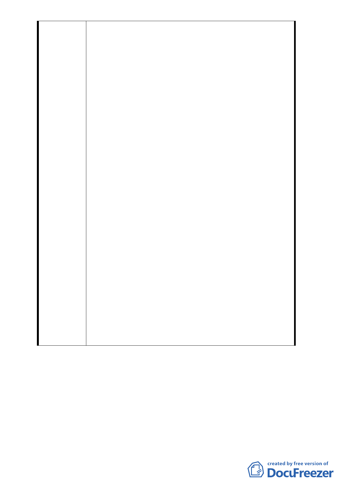

以自組都市更新方式，一步一腳印的走，至今 11 年了
－96 年 3 月更新單元公告，96 年 5 月事業概要核准，
96 年 6 月申請更新會籌組，96 年 10 月核准更新會立案
，97 年 6 月事業計畫及權利變換計畫報核，98 年 6 月
事業計畫及權利變換計畫核定，98 年 7 月 15 日申請建
照，98 年 10 月 20 日建照核准，98 年 12 月 9 日建照抽
查，98 年 12 月至 99 年 3 月與營建署及建管處協調，99
年 3 月至 100 年 3 月後經住戶代表敦請議員協助本案，
經數次研商後與市府協調達成以下共識：為保障原住戶
之權利，市政府協助辦理都市計畫變更（公園退縮 2 公
尺），本案 A 棟建築亦向北平移退縮 2 公尺（面前人行
道增加 2 公尺）。該方案可解決地上層各住宅單元面積
不變，僅地下室少量車位微調之方式。不會造成本案先
前建築執照及都市更新作業作廢一切重來之困境。
2. 但如果都市計畫變更未通過，則全案建築設計需重新變
更，則影響說明如下：
（1）本案更新會自 89 年鑑定出海砂屋後，僅先期整合過
程已超過 10 年，故至建照核准後開工至今，住戶均
盼房子早日改建完成。
（2） 事業計畫及權利變換計畫均已核定，若變更設計恐
須面臨以下問題：
A. 說服各住戶同意書重新收集簽署，因不信任感將
遭遇強大的反彈。
B. 原選配作業則需重新選配（實務上操作困難，將
面臨住戶抗議難以進行）。
C. 更新會也需重新召開住戶大會議決，恐產生對各
方面的意見，難以有有意義的結論，反而延生其
他的問題。
D. 自組更新的住戶們有工程經費產生問題，房屋租
金費用暴增，將造成住戶嚴重的生活問題。
如果逕行變更事業計畫及權利變換作業，則一切需
重新審議，預估需再耗時 1-2 年，恐影響本社區住戶後
續是否推行改建更新之凝聚力與信心。
- 15 -